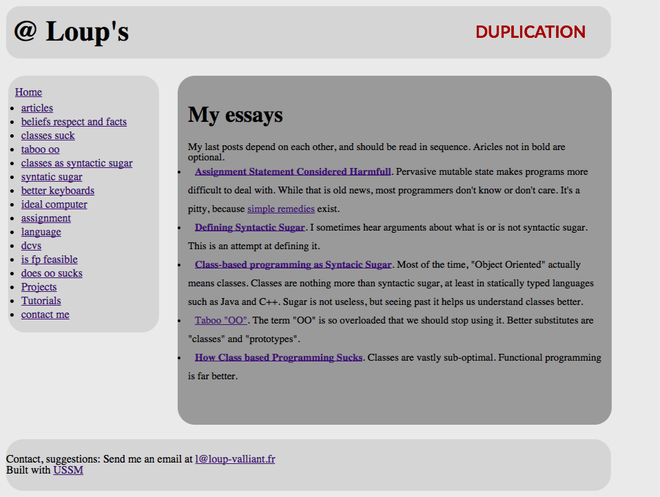
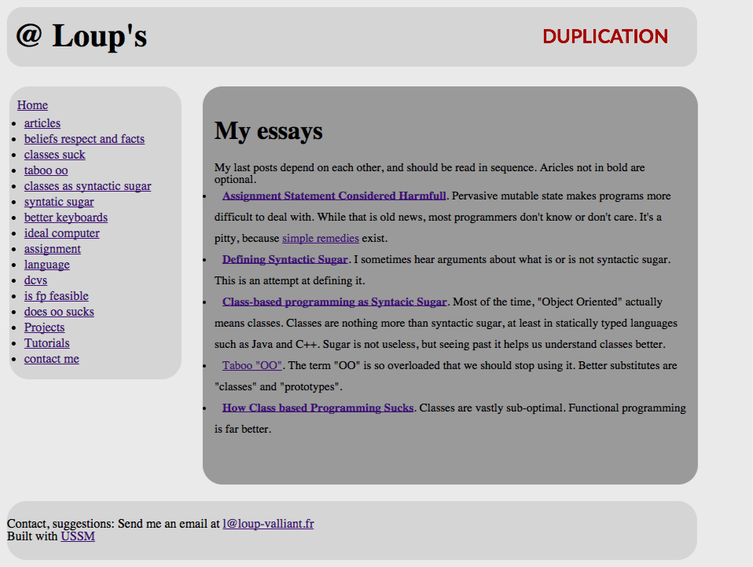

My essays
My last posts depend on each other, and should be read in sequence. Aricles not in bold are optional.
Assignment Statement Considered Harmfull. Pervasive mutable state makes programs more difficult to deal with. While that is old news, most programmers don't know or don't care. It's a pitty, because simple remedies exist.
- Defining Syntactic Sugar. I sometimes hear arguments about what is or is not syntactic sugar. This is an attempt at defining it.
- Class-based programming as Syntacic Sugar. Most of the time, "Object Oriented" actually means classes. Classes are nothing more than syntactic sugar, at least in statically typed languages such as Java and C++. Sugar is not useless, but seeing past it helps us understand classes better.
- Taboo "OO". The term "OO" is so overloaded that we should stop using it. Better substitutes are "classes" and "prototypes".
- How Class based Programming Sucks. Classes are vastly sub-optimal. Functional programming is far better.
 
